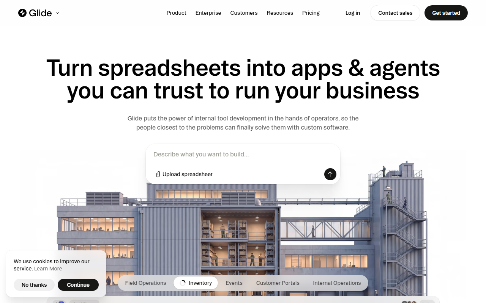
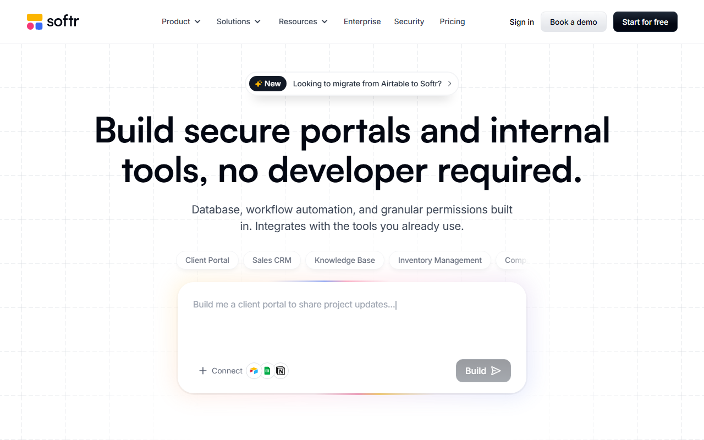
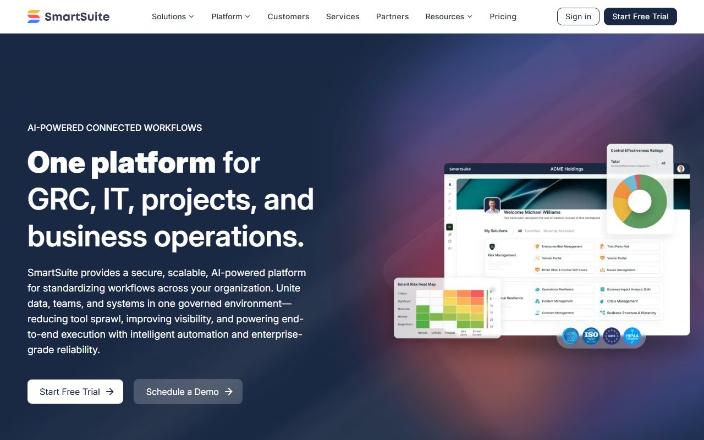
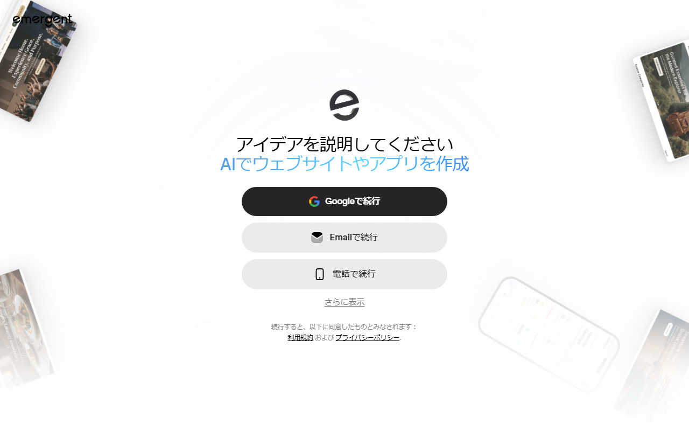
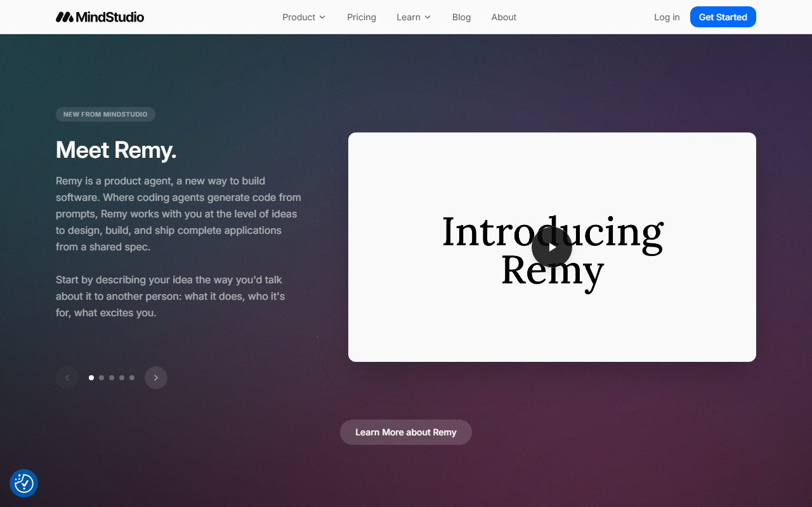

ノーコードツール一覧【2026年】用途別のおすすめと無料枠・日本語対応を比較
ノーコードツールは、プログラミングなしで業務アプリや顧客ポータルを作るサービスです。AIアプリを作れる製品もあります。作れるものや無料公開の条件は製品ごとに異なります。
この記事では、5製品について、向いている人や無料枠を比べます。日本語対応や支払い方法、解約条件も取り上げます。
ノーコードツールおすすめ5選の早見（無料枠・向いている人）
- Glide：無料／作成・テストのみ
- Softr：無料／5人まで公開可
- SmartSuite：14日間の無料体験
- Emergent：無料／月10 credits
- MindStudio：無料／月1,000 runs
迷ったらSoftrがおすすめです。このプランでは5人まで使えるポータルを公開でき、5,000件のデータを扱えます。
無料公開の範囲が分かります。ポータルの作成画面も見られます。
まずは作りたいものを4種類に分ける
ノーコードツールは、製品ごとに作れるものが異なります。作りたいものに合わせて比較対象を選びます。
候補は「作りたいものを決める→欠かせない機能を挙げる→条件を満たす製品の無料枠を試す」の順で絞ります。製品名だけで選ぶと、公開条件や外部ユーザー数の制限を見落としがちです。
社内業務アプリ・顧客ポータルを作る
社内データを画面化するならGlideが候補です。顧客や会員向けのログイン画面にはSoftrが合います。SmartSuiteは、日本語UIでチームの業務データやプロジェクトをまとめたい場合の比較対象です。
Webサイト・LPを公開する
WebサイトやLPでは、デザインと独自ドメインを見ます。CMSやフォームの制約、公開できるページ数も比較対象です。社内アプリとは選ぶ基準が異なります。
複数サービスの作業を自動化する
自動化ツールは、一つのサービスで起きた出来事をきっかけに、別のサービスの処理を動かす仕組みです。候補を選ぶ際は、月間実行回数と接続先を比べます。エラーが起きた処理を再実行できるかも見ておきます。
AIアプリ・AIエージェントを作る
Emergentは、Web／モバイルアプリ全体を組み立てるツールです。MindStudioは複数のAIモデルや処理をつなぐため、完成物が異なります。通常の画面ビルダーとは分け、creditsやruns、モデル利用料を比べます。
業務アプリ・顧客ポータル向けのおすすめ3選
業務アプリの試作にはGlide、顧客向けポータルの公開にはSoftrが向きます。SmartSuiteはチーム内の業務管理向けで、顧客ポータルとは別枠で比べます。
Glide｜社内向けアプリを作成・テストしたい人

公式サイトは英語表示で、表計算データを読み込むための入力欄と「Get started」ボタンが見えます。
Glide ClassicのFreeでは、editorは1人、personal usersは最大10人です。Glide Tables／Big Tablesは最大25,000行まで扱えます。作成やテストはできますが、無料公開はできません。既存データから必要な画面を作れるか試すプランです。有料プランを比べる際は、別製品のGlideOSと混同しないようにします。
- 向く成果物：社内データを使う業務アプリの試作
- 無料でできる範囲：ビルダー内での作成とテスト
- 公開・人数の制限：無料公開不可、personal usersは最大10人
- 日本語対応：日本語UIと日本語サポートの提供は公式情報では分からない
無料枠では公開できません。まず画面構成とデータの扱いをテストし、社内で使い始める前に有料プランを比べます。
Softr｜顧客・会員向けポータルを小さく始めたい人

英語表示の画面に「Start for free」と顧客ポータル作成用の入力欄が表示されています。
Freeでは、buildersは最大3人、app usersは5人です。database recordsは5,000件で、アプリ数には上限がありません。少人数のポータルを公開できます。一方、AI creditsは月5、workflow actionsは月500です。AI機能や自動処理を使う場合は、利用者数以外の上限も見ます。
- 向く成果物：顧客・会員向けのログイン付きポータル
- 無料でできる範囲：最大3 builders、app users 5人、5,000 records
- 公開・人数の制限：外部ユーザー数、AI credits、workflow actionsを見る
- 日本語対応：日本語UIと日本語サポートの提供は公式情報では分からない
予定する外部ユーザー数とレコード数を見積もります。自動処理の回数も含め、無料枠のどの上限に最初に達するかを見ます。
SmartSuite｜日本語UIでチーム業務をまとめたい人

トップ画面は英語表示で、「Start Free Trial」のボタンがあります。
SmartSuiteは日本語を含む15言語にローカライズされ、システムUIを切り替えられます。ただし、入力データは自動翻訳されません。恒久無料プランはなく、Professionalの14日間トライアルが用意されています。カードは不要で、自動課金もありません。Teamは最低3ユーザー、Professionalは最低5ユーザーです。料金は最低席数を含めて判断します。
- 向く成果物：チームの業務データとプロジェクトをまとめる基盤
- 無料でできる範囲：Professionalを14日間試用
- 公開・人数の制限：Teamは最低3ユーザー、Professionalは最低5ユーザー
- 日本語対応：システムUIは日本語対応、日本語の有人サポートは公式情報では分からない
恒久無料プランはなく、期間限定のトライアルです。14日間で日本語UIと権限設定を試します。毎日の業務を一通り進められるかも見ておきます。
AIアプリ・AIエージェント向けのおすすめ2選
Emergentは、AIと対話しながらWeb／モバイルアプリを組み立てたい人向けです。複数のAIモデルをつないだエージェントやワークフローには、MindStudioが合います。
Emergent｜AIでWeb・モバイルアプリを組み立てたい人

登録画面は日本語で表示され、Google・メール・電話から続行できます。
EmergentのFreeは月額$0で、毎月10 creditsが付きます。Web／mobile構築とLLM統合も対象です。有料プランの費用は、月額だけでなくcreditの消費量にも左右されます。無料枠では、ログインからAI応答まで動く試作品を一つに絞ります。
- 作れるもの：LLMと連携するWeb／モバイルアプリ
- 無料枠：毎月10 credits
- 従量要素：アプリ構築で使うcredits
- 契約条件：日本語UI、日本語サポート、日本向け決済、請求書、返金条件は公式情報では分からない
- 解約：SettingsのBillingから手続き可能。未使用の月次creditsは期間末に失効し、プロジェクトとデータは保持される
10 creditsの範囲では、試す場面を一つに絞ります。そこで必要なcredit量を把握します。
MindStudio｜AIエージェントとワークフローを作りたい人

トップ画面は英語表示で、右上に「Get Started」ボタンがあります。
Freeは月額$0に従量料金が加わります。Freeの利用者にはコミュニティ、Individualの利用者にはSlack communityが案内されています。日本語対応は未確認です。
- 作れるもの：AIエージェントと複数工程のワークフロー
- 無料枠：1 agent／月1,000 runs／200超モデル／BYO API keys
- 従量要素：接続するAIモデルの利用料
- 契約条件：日本語UI、日本発行カード、JCB、PayPal、請求書対応は公式情報では分からない
まず利用するモデルを決め、agent数とrunsを見積もります。そのうえで従量料金を計算すると、想定した月額費用との差を減らせます。
無料で試せる範囲｜作成・公開・運用を分けて比べる
無料で「作れる」ことと、外部へ「公開して使い続けられる」ことは別です。まず公開可否と利用者数を見ます。次にデータ量や実行回数、AI creditsを比べます。
無料枠を超えたときの料金も見ておきます。円換算には1ドル=159円を使います（執筆時点の目安。為替で変動）。Glide ClassicのExplorerは、年払い換算$19/月（約3,021円/月）です。一方、SoftrのBasicは年払い$19/月（約3,021円/月）です。SmartSuiteでは、Teamが年払い$15/席/月で約2,385円に相当します。契約には最低3ユーザーが必要です。MindStudioのIndividualは$20/月、約3,180円/月に従量料金が加わります。EmergentのStandardは公式ページ間で年払い価格の表記が一致しないため、ここでは円換算を示しません。
無料プランがあるGlide・Softr・Emergent・MindStudio
4製品とも無料で始められますが、最初にぶつかる上限が異なります。
- Glide：無料公開は不可
- Softr：外部ユーザー数とレコード数
- Emergent：月10 credits
- MindStudio：1 agentと月1,000 runs
本番へ移る前に、どの条件が無料枠では足りないかを比べます。
SmartSuiteは無料プランではなく14日間トライアル
SmartSuiteはProfessionalの14日間トライアルです。カード不要・自動課金なしですが、期限後も無料で使い続ける前提では選べません。期間内に日本語UIと権限設定を試し、担当業務に合うかを見ます。
無料のまま使うか有料へ移るかを決める
有料化の時期は、実際に公開・利用を始めるときの条件で判断します。
- Glide：試作した社内アプリを公開する段階
- Softr：外部ユーザー、レコード、workflow actionsのいずれかが無料上限を超える段階
- SmartSuite：最低席数を受け入れたうえで、必要な権限を設定でき、チームで使えると判断した段階
- Emergent／MindStudio：creditsやrunsに加え、モデル利用料を含む月間費用を見積もれた段階
- 共通：監査や障害時対応など、実際に使い始めるための条件を無料枠では満たせない段階
無料枠を試す目的は、実際の利用に足りない条件と、最初に達する上限を知ることです。
日本語・支払い・解約・データ移行で確認すること
日本語UIがあっても、日本語で問い合わせられるとは限りません。契約前に見るのは、決済方法と請求書の有無です。解約日とデータの書き出し方法も押さえておきます。
日本語UIと日本語サポートは別に確認する
日本語UIがあると分かっているのはSmartSuiteです。ただし、入力データの自動翻訳や日本語の有人サポートまで保証する情報ではありません。
ほかの4製品は、公式情報だけでは日本語UIの有無を判断できません。5製品とも、日本語の有人サポートは保証されていません。日本語での問い合わせが欠かせない場合は、契約前に対応言語を問い合わせます。
日本からの支払いと請求書対応を確認する
SmartSuiteの通常プランでは、主要クレジットカードを使います。請求書払いは、Sales経由で購入するEnterprise／Signatureに限られます。条件を満たすEnterprise年払いでは、ACHやwire、小切手も案内されています。
GlideとMindStudioは登録した決済手段へ課金されます。ただし、日本発行カードやJCB、PayPalが使えるかは公式情報だけでは判断できません。SoftrとEmergentは、日本向けの決済・請求書条件を公式に案内していません。GlideとMindStudioも、請求書対応の範囲は不明です。日本で使える支払い方法が条件なら、この4製品はいったん優先度を下げます。問い合わせの回答が届いてから候補に戻します。
海外SaaSの税務上の扱いは契約者の状況で変わるため、経理処理や消費税の判断は税理士に確認してください。
解約日と返金条件を確認する
GlideはCustomer Portalから解約すると期間末に効力が発生します。初回購入から14日以内は返金を申請できますが、14日後と日割りの返金はありません。
SmartSuiteもいつでも解約手続きができ、現在の請求期間末に解約されます。MindStudioはBilling settingsから自動更新を止め、期間末まで利用できます。当期分の日割り返金はありません。既払い料金も、規約に明示された場合を除いて返金されません。
SoftrはWorkspaceのPlans and billingから契約情報を変更できます。ただし、解約の効力発生日と返金条件は公式情報から判断できません。EmergentはSettingsのBillingから解約できます。未使用の月次creditsは期間末に失効し、プロジェクトとデータは保持されます。返金条件は公式情報に見当たりません。
データ移行とベンダーロックインを契約前に確かめる
退会と移行は別です。契約前に、次の項目を少量のサンプルデータで確かめます。
- レコードを一般的な形式で書き出せるか
- 外部データベースへ接続できるか
- 作成したコードを持ち出せるか
- 独自ドメインを別の環境へ切り替えられるか
- 外部ユーザーが増えたとき、どの単位で課金されるか
- 解約前に、データと設定を誰が回収するか
Glideでは、Data EditorからCSVを書き出せます。Softrの出力形式はCSVまたはPDFです。SmartSuiteでは、保存済みビューのデータを書き出せます。EmergentはGitHub連携に対応し、モバイルアプリのコードもダウンロード可能です。MindStudioは、データとコードをどこまで一括で持ち出せるか分かりません。ノーコードで作った画面よりも、顧客情報や業務データを回収できるかを優先します。
Glideでは有料化の前に、解約日と返金対象を把握します。ClassicとGlideOSの違いも比べます。
SmartSuiteでは最低ユーザー数を押さえます。カード払いと請求書払いの条件、請求期間末の解約も比べます。
MindStudioでは、自動更新を止める方法と期間末まで使えるかを確かめます。返金条件に加え、モデル利用料も見ておきます。
ノーコードで作れないもの・向かないケース
複雑な独自処理がある、または大量アクセスが見込まれるなら、ノーコードだけで完結させない方がよいこともあります。厳格なデータ統制や完全なデータ移行が欠かせないときも同じです。
複雑な要件や大規模処理が中心になる
試作品が動いても、本番環境で安定するとは限りません。本番前に、データ量と権限設定を試します。監査ログや複雑な承認が欠かせないなら、無料枠のデモだけでは採用を決められません。多数の外部連携が必要な場合も、有料プランや通常開発まで比べます。
本番要件が固まっているなら、ローコードや通常開発も含めて費用を比べます。
独自デザインやネイティブ機能が重要になる
テンプレートの範囲を超えるUIや端末固有機能が欠かせないなら、通常開発も候補です。社内フォームでは、見た目より入力の流れや権限を優先する場合があります。画面を細かく変えられることと、早く使い始められることのどちらを優先するか決めます。
将来の移行先を確保したい
データを書き出せても、画面や処理をコードで持ち出せるとは限りません。コードを取得できても、認証や外部連携の再構築費用が生じます。
次のいずれかに当てはまるなら、ノーコード以外の手段も同時に検討します。
- 数年後の移行先や自社運用が契約条件になっている
- 顧客データの保管場所と監査要件が厳しい
- 製品固有の機能へ依存すると事業継続に影響する
- 外部ユーザーや実行回数の増加で料金が急増する可能性がある
ノーコードツールのよくある質問
総合順位だけでは候補を絞れません。作りたい成果物を決め、無料で公開できるかを見ます。日本語で使えるか、将来移行できるかも比べます。
ノーコードツールのランキング1位を選べばよい？
ランキングごとに対象製品と評価軸が違うため、1位だけで決める必要はありません。まず何を作るかを決め、その候補を比べます。
日本語で使いやすいツールは？
日本語UIがあると分かっている候補はSmartSuiteです。ただし、日本語の有人サポートまでは保証されていません。ほかの4製品は、日本語UIの有無を公式情報から判断できません。日本語表示が欠かせない場合は、現時点では選びにくい候補です。
Webサイト作成や自動化ツールも同じ基準で比べられる？
同じ基準では比べられません。Web・LPでは、独自ドメインとCMSを比べます。フォームの制約も見逃せません。自動化ツールで見るのは、接続先と実行回数です。エラー処理も、業務アプリにはない比較項目になります。
まとめ｜用途を決めて無料枠から試す
最初に作りたいものを決めます。業務アプリ／ポータルの候補はGlide・Softr・SmartSuiteです。AIアプリ／AIエージェントならEmergent・MindStudioが候補です。
無料枠やトライアルでは、実際の業務に近い一つの流れを最後まで動かします。最初に見るのは、公開の可否と利用者数です。次にデータ量とcredits／runsを比べ、日本語で使えるかも試します。データを移す方法まで押さえておけば、乗り換え時に困りません。支払い方法や解約条件が分からない製品は、問い合わせの回答後に契約候補へ戻します。
Glideは無料で作成・テストし、公開が必要になったら有料プランの料金を見ます。
Softrは無料公開を試し、外部ユーザー数とレコード数を見ます。workflow actionsにも余裕があるかを確かめます。
SmartSuiteは14日間のうちに、日本語UIとチームでの使い方が業務に合うかを確かめます。
Emergentは毎月10 creditsで、実際に必要な機能を一つ作ります。そこでcreditの必要量を把握します。
MindStudioは1 agentと月1,000 runsの範囲でエージェントを動かします。モデル利用料を含む費用も見ます。